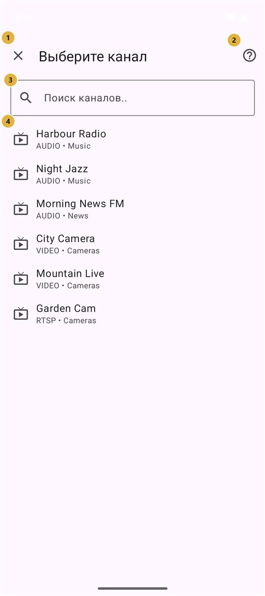
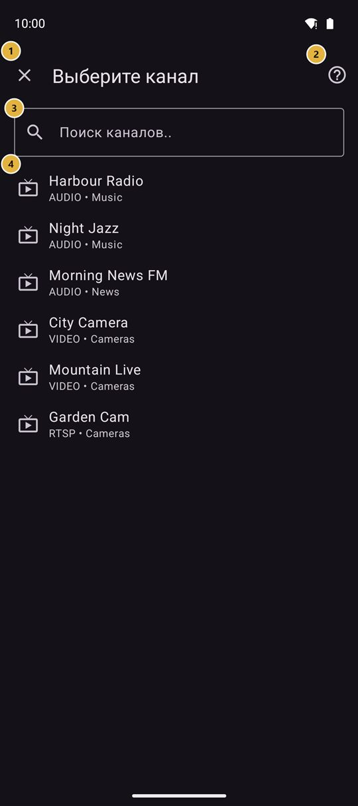

Выберите канал
Для чего этот экран
Выберите канал, который открывает плитка канала на домашнем экране. Этот экран появляется, когда вы добавляете плитку.


Порядок действий
- Найдите канал: прокрутите список 4 или введите часть названия в поле поиска 3.
- Коснитесь канала. Плитка создаётся сразу, а этот экран закрывается.
- Передумали - выйдите кнопкой «Закрыть» 1; плитка не добавится.
Элементы
1ЗакрытьВыходит, не добавляя плитку.
На домашний экран ничего не добавляется.
- Отмена
- Добавьте плитку снова из списка виджетов домашнего экрана.
2СправкаОткрывает эту страницу.
«Назад» возвращает к списку.
- Сочетание клавиш
- F1
3Поиск каналов..Сужает список по мере ввода.
Ищет по названию канала. Если ничего не подошло, экран сообщает, что каналы не найдены.
4Список каналовВаши каналы.
Касание строки выбирает этот канал для плитки. Затем плитка открывает его одним касанием на домашнем экране.
- Отмена
- Удалите плитку и добавьте снова, чтобы выбрать другой канал.